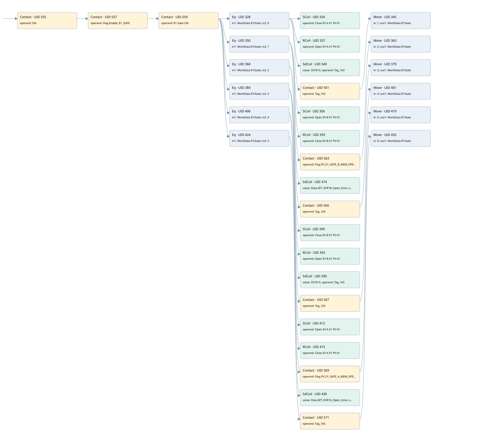

r1 gate loop pv-01
r1 scraps gate 2 · 검색 색인 순서 3 · 원본 내부 NID 추정 2
백업 PLF 원본의 2826604 바이트 위치에서 복원한 XML. 검색 문서 1913의 객체 키 16102200db11000000000000와 연결했다. 이름 해석 49/49개. 남은 RefId는 상수 또는 미해석 참조다.
연결 구조 다시 그리기
원본 Part/PCon/Wire를 이용한 연결도다. TIA 화면의 래더 배치 또는 실행 결과를 재현한 그림은 아니다. 핀 연결은 아래 표와 원본 XML을 기준으로 읽는다. 노드 위에 마우스를 두면 피연산자 이름을 볼 수 있다.

접점·코일·블록과 피연산자
| Part UID | Gate | Negated 핀 | 연결 피연산자 |
|---|---|---|---|
| 555 | Contact | operand = ON | |
| 557 | Contact | operand = Flag.Enable_R1_GATE | |
| 559 | Contact | operand = R1 Gate ON | |
| 328 | Eq | in1 = WorkData.R1State; in2 = 0 | |
| 334 | SCoil | operand = Close EV A 01 PV-01 | |
| 337 | RCoil | operand = Open EV A 01 PV-01 | |
| 340 | SdCoil | value = S5T#1S; operand = Tag_163 | |
| 561 | Contact | operand = Tag_163 | |
| 345 | Move | in = 1; out1 = WorkData.R1State | |
| 350 | Eq | in1 = WorkData.R1State; in2 = 1 | |
| 356 | SCoil | operand = Open EV B 01 PV-01 | |
| 359 | RCoil | operand = Close EV B 01 PV-01 | |
| 563 | Contact | operand = Flag.PV_01_GATE_B_MEM_OPEN | |
| 363 | Move | in = 2; out1 = WorkData.R1State | |
| 368 | Eq | in1 = WorkData.R1State; in2 = 2 | |
| 374 | SdCoil | value = Data.SET_EVR1B_Open_time; operand = Tag_164 | |
| 565 | Contact | operand = Tag_164 | |
| 379 | Move | in = 3; out1 = WorkData.R1State | |
| 384 | Eq | in1 = WorkData.R1State; in2 = 3 | |
| 390 | SCoil | operand = Close EV B 01 PV-01 | |
| 393 | RCoil | operand = Open EV B 01 PV-01 | |
| 396 | SdCoil | value = S5T#1S; operand = Tag_165 | |
| 567 | Contact | operand = Tag_165 | |
| 401 | Move | in = 4; out1 = WorkData.R1State | |
| 406 | Eq | in1 = WorkData.R1State; in2 = 4 | |
| 412 | SCoil | operand = Open EV A 01 PV-01 | |
| 415 | RCoil | operand = Close EV A 01 PV-01 | |
| 569 | Contact | operand = Flag.PV_01_GATE_A_MEM_OPEN | |
| 419 | Move | in = 5; out1 = WorkData.R1State | |
| 424 | Eq | in1 = WorkData.R1State; in2 = 5 | |
| 430 | SdCoil | value = Data.SET_EVR1A_Open_time; operand = Tag_166 | |
| 571 | Contact | operand = Tag_166 | |
| 435 | Move | in = 0; out1 = WorkData.R1State |
접점 경로를 펼친 조건식
Contact·O/A·비교기의 원본 연결을 읽기 쉽게 펼친 보조 해석이다. POWER는 전원 레일 시작을 뜻한다. 호출 블록·에지·타이머의 내부 동작과 다중 쓰기 순서는 이 표로 실행 검증하지 않았다. 미해석 핀과 RefId는 원문 연결표에서 확인한다.
| UID | 동작 | 대상 | 원본 접점 경로 | 내용 |
|---|---|---|---|---|
| 334 | SCoil | Close EV A 01 PV-01 | (((ON AND Flag.Enable_R1_GATE) AND R1 Gate ON) AND [WorkData.R1State = 0]) | 조건 성립 시 Set |
| 337 | RCoil | Open EV A 01 PV-01 | (((ON AND Flag.Enable_R1_GATE) AND R1 Gate ON) AND [WorkData.R1State = 0]) | 조건 성립 시 Reset |
| 340 | SdCoil | Tag_163 | (((ON AND Flag.Enable_R1_GATE) AND R1 Gate ON) AND [WorkData.R1State = 0]) | 시간 동작 SdCoil; 타이머 의미 추가 확인 / 시간 인자 S5T#1S |
| 345 | Move | WorkData.R1State | ((((ON AND Flag.Enable_R1_GATE) AND R1 Gate ON) AND [WorkData.R1State = 0]) AND Tag_163) | Move 입력 1 |
| 356 | SCoil | Open EV B 01 PV-01 | (((ON AND Flag.Enable_R1_GATE) AND R1 Gate ON) AND [WorkData.R1State = 1]) | 조건 성립 시 Set |
| 359 | RCoil | Close EV B 01 PV-01 | (((ON AND Flag.Enable_R1_GATE) AND R1 Gate ON) AND [WorkData.R1State = 1]) | 조건 성립 시 Reset |
| 363 | Move | WorkData.R1State | ((((ON AND Flag.Enable_R1_GATE) AND R1 Gate ON) AND [WorkData.R1State = 1]) AND Flag.PV_01_GATE_B_MEM_OPEN) | Move 입력 2 |
| 374 | SdCoil | Tag_164 | (((ON AND Flag.Enable_R1_GATE) AND R1 Gate ON) AND [WorkData.R1State = 2]) | 시간 동작 SdCoil; 타이머 의미 추가 확인 / 시간 인자 Data.SET_EVR1B_Open_time |
| 379 | Move | WorkData.R1State | ((((ON AND Flag.Enable_R1_GATE) AND R1 Gate ON) AND [WorkData.R1State = 2]) AND Tag_164) | Move 입력 3 |
| 390 | SCoil | Close EV B 01 PV-01 | (((ON AND Flag.Enable_R1_GATE) AND R1 Gate ON) AND [WorkData.R1State = 3]) | 조건 성립 시 Set |
| 393 | RCoil | Open EV B 01 PV-01 | (((ON AND Flag.Enable_R1_GATE) AND R1 Gate ON) AND [WorkData.R1State = 3]) | 조건 성립 시 Reset |
| 396 | SdCoil | Tag_165 | (((ON AND Flag.Enable_R1_GATE) AND R1 Gate ON) AND [WorkData.R1State = 3]) | 시간 동작 SdCoil; 타이머 의미 추가 확인 / 시간 인자 S5T#1S |
| 401 | Move | WorkData.R1State | ((((ON AND Flag.Enable_R1_GATE) AND R1 Gate ON) AND [WorkData.R1State = 3]) AND Tag_165) | Move 입력 4 |
| 412 | SCoil | Open EV A 01 PV-01 | (((ON AND Flag.Enable_R1_GATE) AND R1 Gate ON) AND [WorkData.R1State = 4]) | 조건 성립 시 Set |
| 415 | RCoil | Close EV A 01 PV-01 | (((ON AND Flag.Enable_R1_GATE) AND R1 Gate ON) AND [WorkData.R1State = 4]) | 조건 성립 시 Reset |
| 419 | Move | WorkData.R1State | ((((ON AND Flag.Enable_R1_GATE) AND R1 Gate ON) AND [WorkData.R1State = 4]) AND Flag.PV_01_GATE_A_MEM_OPEN) | Move 입력 5 |
| 430 | SdCoil | Tag_166 | (((ON AND Flag.Enable_R1_GATE) AND R1 Gate ON) AND [WorkData.R1State = 5]) | 시간 동작 SdCoil; 타이머 의미 추가 확인 / 시간 인자 Data.SET_EVR1A_Open_time |
| 435 | Move | WorkData.R1State | ((((ON AND Flag.Enable_R1_GATE) AND R1 Gate ON) AND [WorkData.R1State = 5]) AND Tag_166) | Move 입력 0 |
원본 배선 연결
| Wire UID | 동일 Wire 연결 끝점 |
|---|---|
| 573 | Powerrail {} ↔ Part 555.in |
| 487 | ORef 438 (ON) ↔ Part 555.operand |
| 556 | Part 555.out ↔ Part 557.in |
| 488 | ORef 439 (Flag.Enable_R1_GATE) ↔ Part 557.operand |
| 558 | Part 557.out ↔ Part 559.in |
| 489 | ORef 440 (R1 Gate ON) ↔ Part 559.operand |
| 560 | Part 559.out ↔ Part 328.pre ↔ Part 350.pre ↔ Part 368.pre ↔ Part 384.pre ↔ Part 406.pre ↔ Part 424.pre |
| 490 | ORef 441 (WorkData.R1State) ↔ Part 328.in1 |
| 491 | ORef 442 (0) ↔ Part 328.in2 |
| 492 | Part 328.out ↔ Part 334.in ↔ Part 337.in ↔ Part 340.in ↔ Part 561.in |
| 493 | ORef 443 (Close EV A 01 PV-01) ↔ Part 334.operand |
| 494 | ORef 444 (Open EV A 01 PV-01) ↔ Part 337.operand |
| 495 | ORef 445 (S5T#1S) ↔ Part 340.value |
| 496 | ORef 446 (Tag_163) ↔ Part 340.operand |
| 497 | ORef 447 (Tag_163) ↔ Part 561.operand |
| 562 | Part 561.out ↔ Part 345.en |
| 499 | ORef 448 (1) ↔ Part 345.in |
| 500 | Part 345.out1 ↔ ORef 449 (WorkData.R1State) |
| 502 | ORef 450 (WorkData.R1State) ↔ Part 350.in1 |
| 503 | ORef 451 (1) ↔ Part 350.in2 |
| 504 | Part 350.out ↔ Part 356.in ↔ Part 359.in ↔ Part 563.in |
| 505 | ORef 452 (Open EV B 01 PV-01) ↔ Part 356.operand |
| 506 | ORef 453 (Close EV B 01 PV-01) ↔ Part 359.operand |
| 507 | ORef 454 (Flag.PV_01_GATE_B_MEM_OPEN) ↔ Part 563.operand |
| 564 | Part 563.out ↔ Part 363.en |
| 509 | ORef 455 (2) ↔ Part 363.in |
| 510 | Part 363.out1 ↔ ORef 456 (WorkData.R1State) |
| 512 | ORef 457 (WorkData.R1State) ↔ Part 368.in1 |
| 513 | ORef 458 (2) ↔ Part 368.in2 |
| 514 | Part 368.out ↔ Part 374.in ↔ Part 565.in |
| 515 | ORef 459 (Data.SET_EVR1B_Open_time) ↔ Part 374.value |
| 516 | ORef 460 (Tag_164) ↔ Part 374.operand |
| 517 | ORef 461 (Tag_164) ↔ Part 565.operand |
| 566 | Part 565.out ↔ Part 379.en |
| 519 | ORef 462 (3) ↔ Part 379.in |
| 520 | Part 379.out1 ↔ ORef 463 (WorkData.R1State) |
| 522 | ORef 464 (WorkData.R1State) ↔ Part 384.in1 |
| 523 | ORef 465 (3) ↔ Part 384.in2 |
| 524 | Part 384.out ↔ Part 390.in ↔ Part 393.in ↔ Part 396.in ↔ Part 567.in |
| 525 | ORef 466 (Close EV B 01 PV-01) ↔ Part 390.operand |
| 526 | ORef 467 (Open EV B 01 PV-01) ↔ Part 393.operand |
| 527 | ORef 468 (S5T#1S) ↔ Part 396.value |
| 528 | ORef 469 (Tag_165) ↔ Part 396.operand |
| 529 | ORef 470 (Tag_165) ↔ Part 567.operand |
| 568 | Part 567.out ↔ Part 401.en |
| 531 | ORef 471 (4) ↔ Part 401.in |
| 532 | Part 401.out1 ↔ ORef 472 (WorkData.R1State) |
| 534 | ORef 473 (WorkData.R1State) ↔ Part 406.in1 |
| 535 | ORef 474 (4) ↔ Part 406.in2 |
| 536 | Part 406.out ↔ Part 412.in ↔ Part 415.in ↔ Part 569.in |
| 537 | ORef 475 (Open EV A 01 PV-01) ↔ Part 412.operand |
| 538 | ORef 476 (Close EV A 01 PV-01) ↔ Part 415.operand |
| 539 | ORef 477 (Flag.PV_01_GATE_A_MEM_OPEN) ↔ Part 569.operand |
| 570 | Part 569.out ↔ Part 419.en |
| 541 | ORef 478 (5) ↔ Part 419.in |
| 542 | Part 419.out1 ↔ ORef 479 (WorkData.R1State) |
| 544 | ORef 480 (WorkData.R1State) ↔ Part 424.in1 |
| 545 | ORef 481 (5) ↔ Part 424.in2 |
| 546 | Part 424.out ↔ Part 430.in ↔ Part 571.in |
| 547 | ORef 482 (Data.SET_EVR1A_Open_time) ↔ Part 430.value |
| 548 | ORef 483 (Tag_166) ↔ Part 430.operand |
| 549 | ORef 484 (Tag_166) ↔ Part 571.operand |
| 572 | Part 571.out ↔ Part 435.en |
| 551 | ORef 485 (0) ↔ Part 435.in |
| 552 | Part 435.out1 ↔ ORef 486 (WorkData.R1State) |
식별자 해석 근거 49개
| ORef UID | RefId | 이름 | IdentXmlPart 파일 | 해석 방법 |
|---|---|---|---|---|
| 438 | 1 | ON | 0607-IdentXmlPart.xml | UID/RID + search-text + NID agreement |
| 439 | 6 | Flag.Enable_R1_GATE | 0609-IdentXmlPart.xml | UID/RID + search-text + NID agreement |
| 440 | 12 | R1 Gate ON | 0607-IdentXmlPart.xml | UID/RID + search-text + NID agreement |
| 441 | 18 | WorkData.R1State | 0609-IdentXmlPart.xml | UID/RID + search-text + NID agreement |
| 442 | 16 | 0 | 0610-IdentXmlPart.xml | literal candidate: UID/RID/NID + nearby named declarations + search-text agreement |
| 443 | 22 | Close EV A 01 PV-01 | 0607-IdentXmlPart.xml | UID/RID + search-text + NID agreement |
| 444 | 20 | Open EV A 01 PV-01 | 0607-IdentXmlPart.xml | UID/RID + search-text + NID agreement |
| 446 | 25 | Tag_163 | 0607-IdentXmlPart.xml | UID/RID + search-text + NID agreement |
| 445 | 24 | S5T#1S | 0610-IdentXmlPart.xml | literal candidate: UID/RID/NID + nearby named declarations + search-text agreement |
| 447 | 25 | Tag_163 | 0607-IdentXmlPart.xml | UID/RID + search-text + NID agreement |
| 448 | 27 | 1 | 0610-IdentXmlPart.xml | literal candidate: UID/RID/NID + nearby named declarations + search-text agreement |
| 449 | 18 | WorkData.R1State | 0609-IdentXmlPart.xml | UID/RID + search-text + NID agreement |
| 450 | 18 | WorkData.R1State | 0609-IdentXmlPart.xml | UID/RID + search-text + NID agreement |
| 451 | 27 | 1 | 0610-IdentXmlPart.xml | literal candidate: UID/RID/NID + nearby named declarations + search-text agreement |
| 452 | 21 | Open EV B 01 PV-01 | 0607-IdentXmlPart.xml | UID/RID + search-text + NID agreement |
| 453 | 23 | Close EV B 01 PV-01 | 0607-IdentXmlPart.xml | UID/RID + search-text + NID agreement |
| 454 | 11 | Flag.PV_01_GATE_B_MEM_OPEN | 0609-IdentXmlPart.xml | UID/RID + search-text + NID agreement |
| 455 | 29 | 2 | 0610-IdentXmlPart.xml | literal candidate: UID/RID/NID + nearby named declarations + search-text agreement |
| 456 | 18 | WorkData.R1State | 0609-IdentXmlPart.xml | UID/RID + search-text + NID agreement |
| 457 | 18 | WorkData.R1State | 0609-IdentXmlPart.xml | UID/RID + search-text + NID agreement |
| 458 | 29 | 2 | 0610-IdentXmlPart.xml | literal candidate: UID/RID/NID + nearby named declarations + search-text agreement |
| 460 | 32 | Tag_164 | 0607-IdentXmlPart.xml | UID/RID + search-text + NID agreement |
| 459 | 31 | Data.SET_EVR1B_Open_time | 0609-IdentXmlPart.xml | UID/RID + search-text + NID agreement |
| 461 | 32 | Tag_164 | 0607-IdentXmlPart.xml | UID/RID + search-text + NID agreement |
| 462 | 34 | 3 | 0610-IdentXmlPart.xml | literal candidate: UID/RID/NID + nearby named declarations + search-text agreement |
| 463 | 18 | WorkData.R1State | 0609-IdentXmlPart.xml | UID/RID + search-text + NID agreement |
| 464 | 18 | WorkData.R1State | 0609-IdentXmlPart.xml | UID/RID + search-text + NID agreement |
| 465 | 34 | 3 | 0610-IdentXmlPart.xml | literal candidate: UID/RID/NID + nearby named declarations + search-text agreement |
| 466 | 23 | Close EV B 01 PV-01 | 0607-IdentXmlPart.xml | UID/RID + search-text + NID agreement |
| 467 | 21 | Open EV B 01 PV-01 | 0607-IdentXmlPart.xml | UID/RID + search-text + NID agreement |
| 469 | 35 | Tag_165 | 0607-IdentXmlPart.xml | UID/RID + search-text + NID agreement |
| 468 | 24 | S5T#1S | 0610-IdentXmlPart.xml | literal candidate: UID/RID/NID + nearby named declarations + search-text agreement |
| 470 | 35 | Tag_165 | 0607-IdentXmlPart.xml | UID/RID + search-text + NID agreement |
| 471 | 37 | 4 | 0610-IdentXmlPart.xml | literal candidate: UID/RID/NID + nearby named declarations + search-text agreement |
| 472 | 18 | WorkData.R1State | 0609-IdentXmlPart.xml | UID/RID + search-text + NID agreement |
| 473 | 18 | WorkData.R1State | 0609-IdentXmlPart.xml | UID/RID + search-text + NID agreement |
| 474 | 37 | 4 | 0610-IdentXmlPart.xml | literal candidate: UID/RID/NID + nearby named declarations + search-text agreement |
| 475 | 20 | Open EV A 01 PV-01 | 0607-IdentXmlPart.xml | UID/RID + search-text + NID agreement |
| 476 | 22 | Close EV A 01 PV-01 | 0607-IdentXmlPart.xml | UID/RID + search-text + NID agreement |
| 477 | 10 | Flag.PV_01_GATE_A_MEM_OPEN | 0609-IdentXmlPart.xml | UID/RID + search-text + NID agreement |
| 478 | 39 | 5 | 0610-IdentXmlPart.xml | literal candidate: UID/RID/NID + nearby named declarations + search-text agreement |
| 479 | 18 | WorkData.R1State | 0609-IdentXmlPart.xml | UID/RID + search-text + NID agreement |
| 480 | 18 | WorkData.R1State | 0609-IdentXmlPart.xml | UID/RID + search-text + NID agreement |
| 481 | 39 | 5 | 0610-IdentXmlPart.xml | literal candidate: UID/RID/NID + nearby named declarations + search-text agreement |
| 483 | 41 | Tag_166 | 0607-IdentXmlPart.xml | UID/RID + search-text + NID agreement |
| 482 | 40 | Data.SET_EVR1A_Open_time | 0609-IdentXmlPart.xml | UID/RID + search-text + NID agreement |
| 484 | 41 | Tag_166 | 0607-IdentXmlPart.xml | UID/RID + search-text + NID agreement |
| 485 | 16 | 0 | 0610-IdentXmlPart.xml | literal candidate: UID/RID/NID + nearby named declarations + search-text agreement |
| 486 | 18 | WorkData.R1State | 0609-IdentXmlPart.xml | UID/RID + search-text + NID agreement |
검색 코드 보조 자료
참조 명칭을 찾기 위한 자료이며 실행 순서나 AND/OR 관계는 위 연결표로 확인한다.
"on" "flag".enable_r1_gate "r1 gate on" "workdata".r1state 0 "close ev a 01 pv-01" "workdata".r1state 1 "open ev b 01 pv-01" "close ev b 01 pv-01" "flag".pv_01_gate_b_mem_open move 2 "workdata".r1state "workdata".r1state 2 "tag_164" "data".set_evr1b_open_time "tag_164" move 3 "workdata".r1state "workdata".r1state 3 "close ev b 01 pv-01" "open ev b 01 pv-01" "tag_165" s5t#1s "tag_165" move 4 "workdata".r1state "workdata".r1state 4 "open ev a 01 pv-01" "close ev a 01 pv-01" "flag".pv_01_gate_a_mem_open move 5 "workdata".r1state "workdata".r1state 5 "tag_166" "data".set_evr1a_open_time "tag_166" move 0 "workdata".r1state "open ev a 01 pv-01" "tag_163" s5t#1s "tag_163" move 1 "workdata".r1state